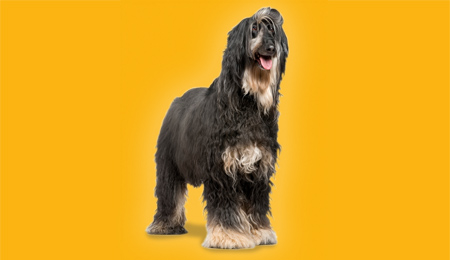
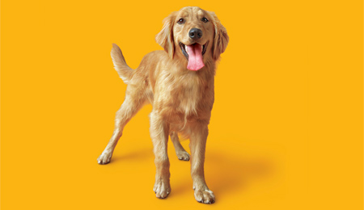

Es un perro de chico a mediano, de pelo largo, si se cuida el pelaje llega a ser espectacular, muy elegante, es muy utilizado en comerciales de televisión y desfiles de modas. Es de los lebreles más conocidos.

Datos
No tiene Afganistán 23kg. - 27kg. 68cm. - 74cm. 10 años
Estadísticas
Caracteristicas Físicas
largas y musculosas termina en forma de anillo con pocos pelos largo muy largo, sedoso y de textura fina todos los colores Regresar
